重点提示：
使用警用车辆时应当严格维护人民警察良好形象，杜绝因违规行车、警车私用、遇难不帮等原因引起的负面舆论炒作。
一、定义
警用车辆，是指公安机关用于执行侦查、警卫、治安、交通管理的巡逻车、勘察车、护卫车、囚车以及其他执行职务的车辆。公安机关警用车辆主要包括：挂“浙·A****警”的警牌车辆和挂地方牌照的公安机关专用车辆。
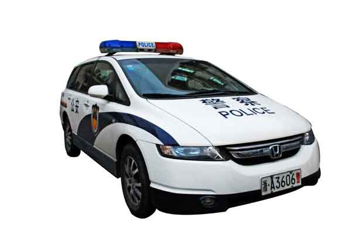 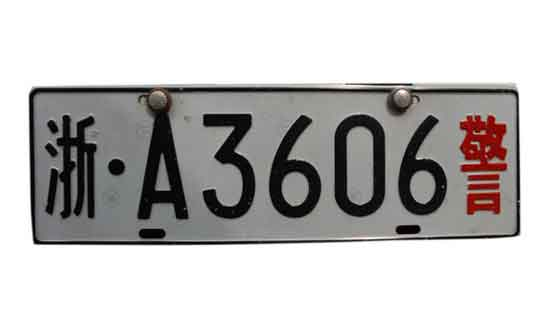
警牌车辆
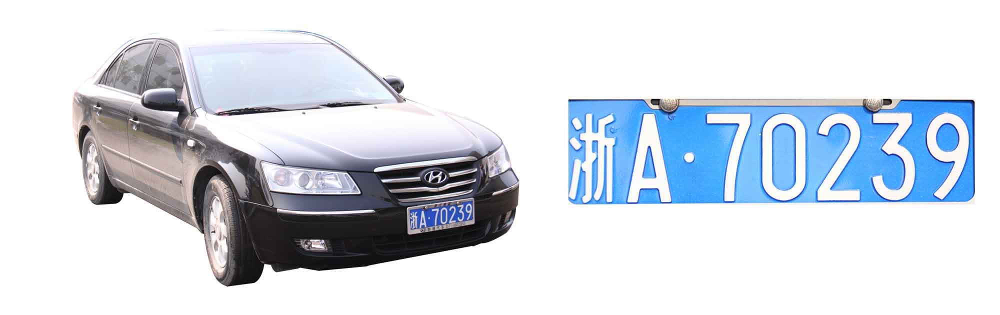
挂地方牌照的公安机关专用车辆
二、警用车辆的管理部门及职责
杭州市公安局后勤处为市局警用车辆及驾驶员管理的职能部门，具体职责：
(一)指导用车单位及时办理警用车辆配备、报废、更新、年检等相关手续。
(二)负责警用车辆驾驶员安全行车教育、培训、准驾证核发、帮助办理驾驶证清卡等工作。
(三)负责编报车辆预算、办理车辆保险、审核车辆维修工作。
(四)负责检查车辆使用情况，维护机关大院内车辆停放秩序。
各公安分局、县（市）公安局应指定相应部门负责本单位警用车辆及驾驶员的管理工作，并明确具体职责。
三、警用车辆的配备、报废与更新
(一)警用车辆分定编车辆和非定编车辆。定编车辆指12座以下客车（含12座）；非定编车辆是指具有特殊装置与特殊用途的车辆和12座以上旅行车以及摩托车，具体车种为囚车、水罐防暴车、装甲防暴车、排爆车、通信指挥车、清障车、专用运犬车、消防车、救护车、后勤保障车（货车、大客车、客货车，其中客货车后车厢不得封闭）和12座以上旅行车。
警用车辆的配备根据公安部警用车辆配备标准和省、市相关规定，定编车辆按照一人一座的标准配置，未达到该标准的单位可以申请新增车辆，已达到该标准的单位只有在报废旧车后方可更新车辆；非定编车辆按需配备，严格审批。
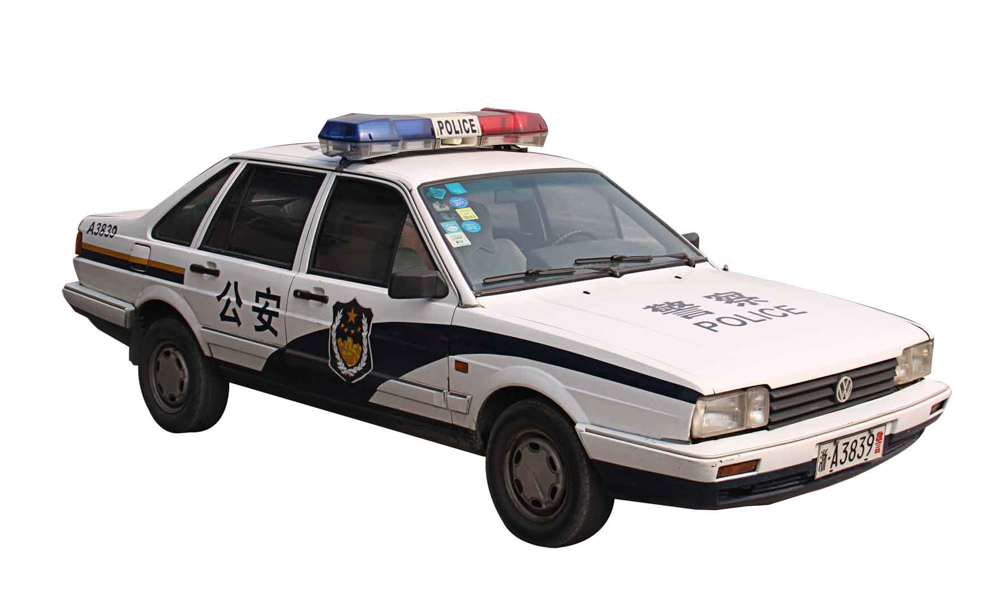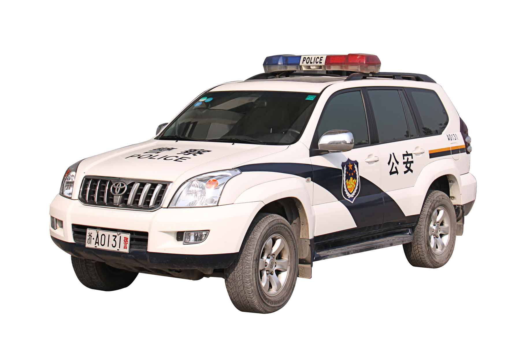
警用车辆定编车型：5座轿车、城市多功能汽车
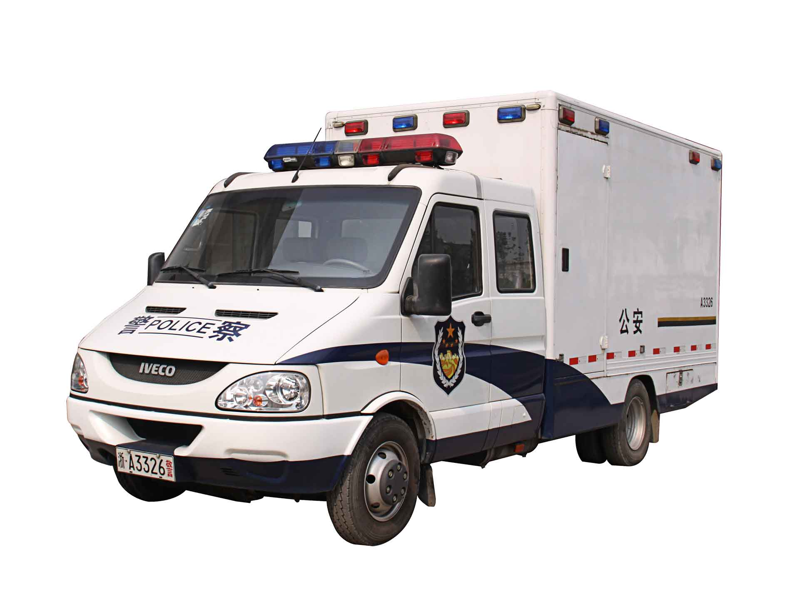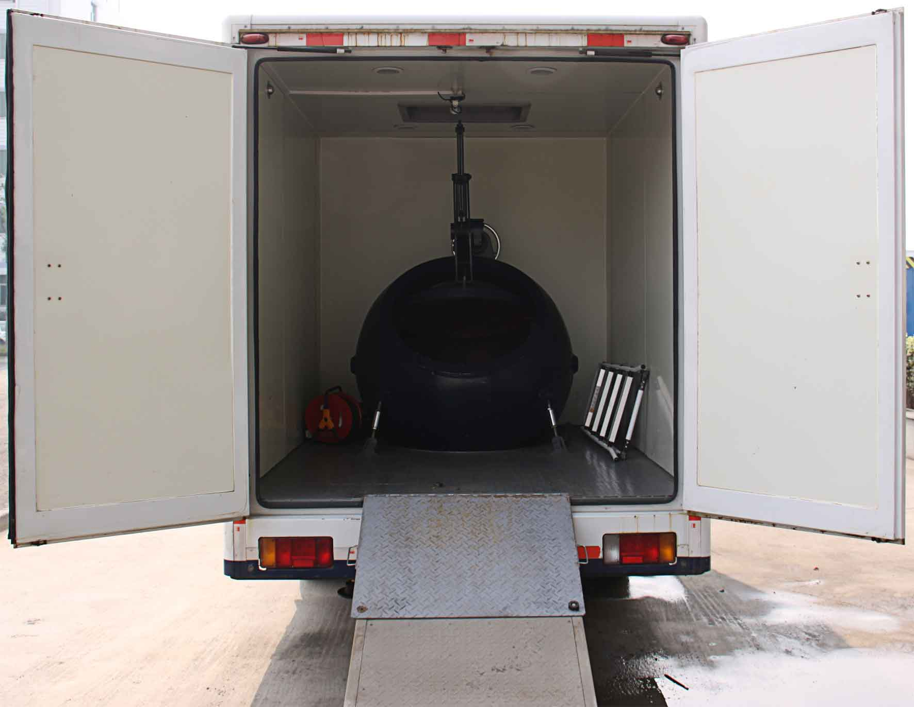
警用车辆非定编车型：排爆车
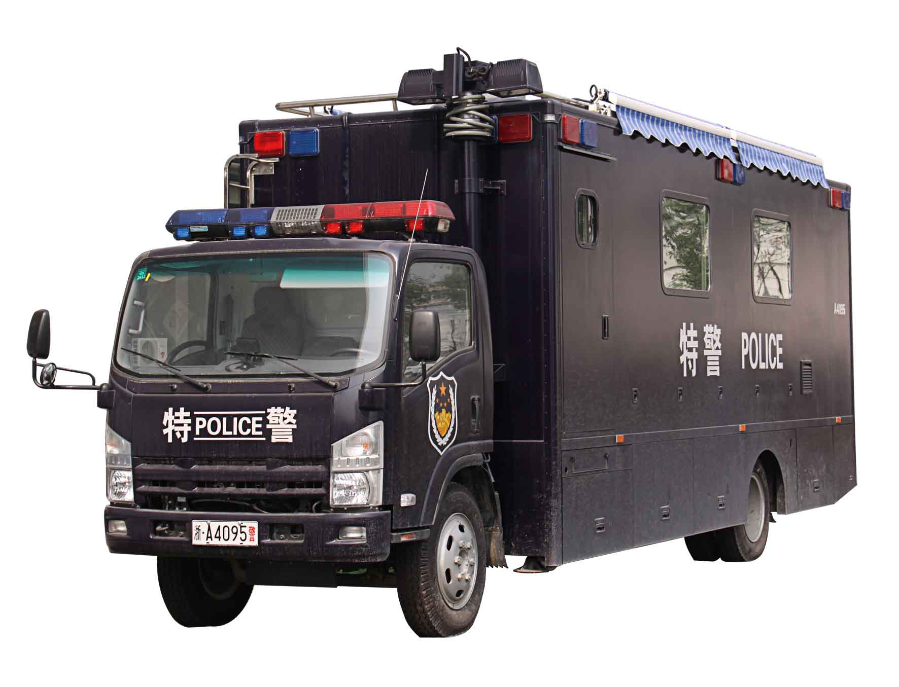
警用车辆非定编车型：厢式货车
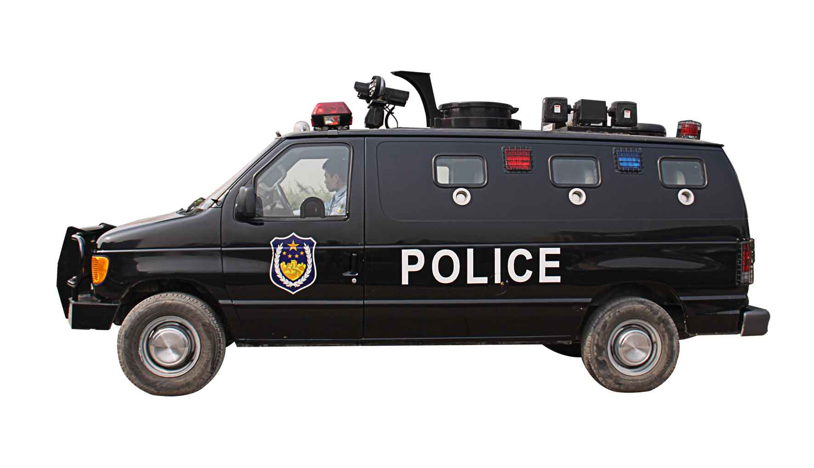
警用车辆非定编车型：通信指挥车、装甲防暴车
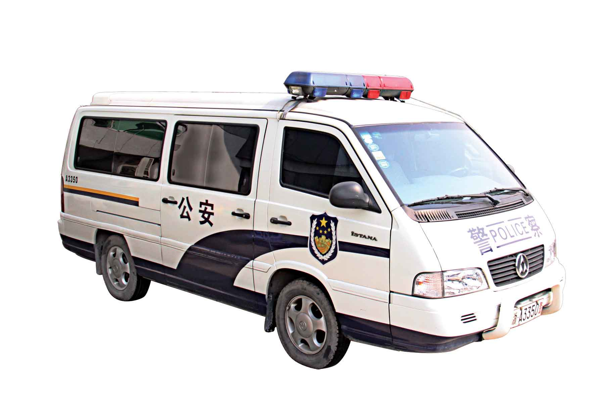
警用车辆非定编车型：15座旅行车
(二)警用车辆管理部门负责办理购车经费申请和控购手续。
1、配备一般警用车辆，除按省控制社会集团购买力办公室规定的车种、车型执行外，均选择配备排气量1.8L（含）以下、价格18万元以内的国产轿车；12座以下的旅行车原则上应配备国产车；从严控制货车（含客货车）与大客车的配备。
2、警卫开道等特种警用车辆和办案等特殊警用车辆，如需配备排气量1.8L以上、价格18万元以上的轿车，应逐级办理控购审批手续。
(三)警用车辆购置需经政府采购，公开招标签订购销合同。
(四)根据国家汽车报废标准，结合市局警用车辆配备情况，警用车辆车况不佳，达到以下标准的可以报废：
1、使用10年以上的车辆；
2、达不到尾气环保排放标准的“黄标车”；
3、损坏严重或车况低劣而影响安全使用的车辆，由使用单位提出书面申请，经后勤部门报财政部门审批后，可提前报废或更新。
(五)警牌车辆报废、更新、转籍（出）后，应当将原车辆号牌、行驶证及时上缴省公安厅交管局车辆管理所；地方牌照车辆报废、更新、转籍（出）后，应当将原车辆号牌、行驶证及时上缴市局交警支队车管处。
(六)市局警牌车辆上牌审批程序及安装要求。
1、用车单位填写《浙江省公安警务用车购买申报表》，经单位领导签字、盖公章后报市局后勤处，同时进行网上申报；
2、市局后勤处对上牌申请进行审核，处领导审批；
3、报省厅后勤处审批，打印车辆分配单，核发定编证；
4、持购车发票、合格证、购置税完税凭证、强制保险单、车辆分配单、定编证、车架号拓印、车辆上牌登记表、单位机构代码证复印件、委托书、办理人身份证复印件，到省厅车管所办理牌照；
5、警车号牌须用固封螺丝安装。对因未按规定安装固封螺丝或保管不善造成车牌遗失的，用车单位须查清遗失经过和原因，向市局书面报告，并落实整改措施。经市局审批后，报省厅交管局审批，办理补牌手续。
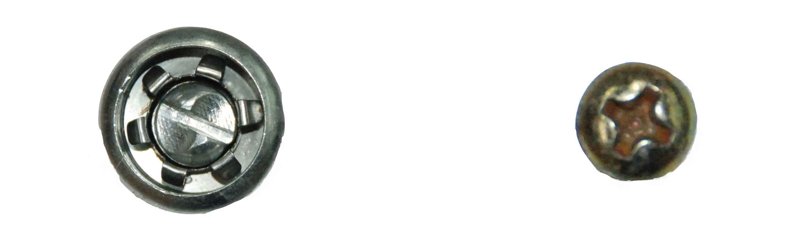
固封螺丝
普通螺丝
6、警牌车辆前车牌的分隔符为小圆点，如：“浙·A****警”；警牌车辆后车牌的分隔符为短横杠，如：“浙-A****警”。
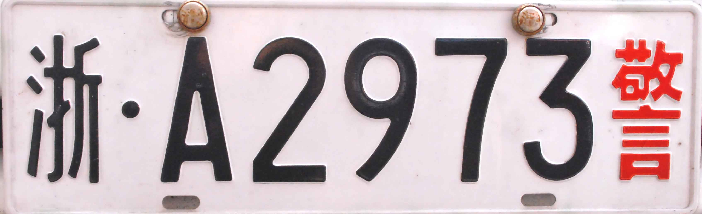 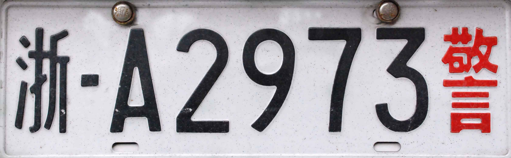
前车牌
后车牌
各区公安分局、县（市）公安局参照执行。
(七)市局地方号牌车辆上牌程序。
1、用车单位填写《杭州市公安局地方车辆上牌审批表》，单位领导签字、盖公章后报市局后勤处；
2、市局后勤处装备科对地方号牌上牌申请，按照省厅规定的公安地方号牌与警牌车辆比例（机关单位上警牌车辆占60%以上，一线实战单位上警牌车辆占80%以上）要求进行审核并报处领导审批；
3、市局后勤处领导审批同意后，用车单位持购车发票、合格证、购置税完税凭证、强制保险单、上牌审批表、车架号拓印、车辆上牌登记表、单位机构代码证复印件、委托书、办理人身份证复印件，到市局交警支队车管处办理牌照。
各区公安分局、县（市）公安局参照执行。
四、警用车辆使用
(一)实行警用车辆驾驶准驾制。
1、警用车辆准驾证由县级以上公安机关核发，办理准驾证前须组织学习交通安全法规和警用车辆使用规定，其中借聘人员须具有3年以上驾龄且2年内未发生责任事故。
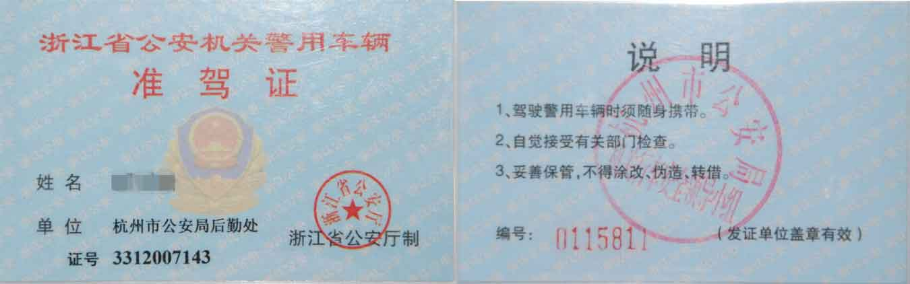
警用车辆准驾证正、反面
2、市局各单位的准驾证由本单位领导审核后报市局后勤处核发，各区公安分局、县（市）公安局核发的准驾证报市局后勤处备案。
3、调离公安机关或因工作变动无需驾驶警用车辆的人员，须同时上缴警用车辆准驾证，用人单位要及时督促、收回。
4、发生下列负主要责任事故情形之一的，驾驶员的准驾证须交由核发单位保管，在事故处理完毕一个月内，驾驶员所在单位管理部门应综合考量该驾驶员的驾驶技术和心理，再决定是否发还准驾证：
(1)事故造成人员严重受伤或死亡；
(2)事故造成超过10万元以上的直接经济损失；
(3)一年内发生两次以上（含）警用车辆事故。
(二)出车应经过批准，并建立行车簿。
1、每个用车单位都要建立专门的行车簿并按规定填写（可采取电子化方式记录）。
出车前，须经本单位领导批准，驾驶员在行车簿上填写用车时间、驾驶员姓名、任务、去向、批准人。因情况紧急出车时来不及填写的，事后应及时补填相关内容。任务结束，须填写收车时间。
2、形成惯例的事项，如110巡车出警等，按有关规定执行。
3、出车线路应与行车簿上登记的一致。
4、单位警用车辆管理负责人应每月对照行车簿核查用车情况，发现不按规范要求执行的，由单位领导对用车人进行批评并责令整改。
(三)驾驶员必须严格遵守用车规范制度并养成良好的行为习惯。
1、经常清洗车辆，保持车内和车辆外观整洁。
2、驾驶员离开时，车辆必须熄火，拔下钥匙并锁好门窗（包括离开车辆时间不长，或车辆仍在自己视野范围内等情形），以防止被人开走、投放物品、偷盗车内物品等情况发生，确保安全。
3、车辆停泊时须停在车位内。若没有停车位，应将车辆停泊在适当的地方，避免阻碍交通。
4、当天气预报有暴雨、台风等恶劣天气时，应将车辆停放在安全的地方，以免受到水浸、被下坠物体砸中或受到其他损伤。
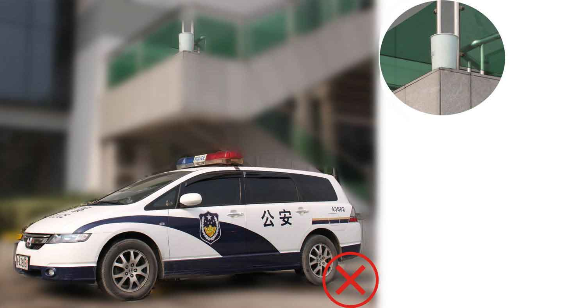
避免车辆停放在可能有下坠物品砸中的地方
5、警用车辆在行驶过程中遇到有群众紧急救助情形时，驾驶员应下车处置，待相关增援警力或救助人员到场后离开，正在执行紧急任务的除外。
(四)驾驶员用车过程中不得有以下行为：
1、利用警用车辆拖引其他车辆(拖曳车除外)；
2、将脚搁放在驾驶台或前排座位上、将胳膊架放在车门上等不文明的行为；
3、车内音响声音过大，影响他人；
4、违规超车或为炫耀技术做一些危险性动作；
5、车内无警务人员时，将武器、涉密文件单独留在车上；
6、将警用车辆停放在营业性娱乐场所周边和其他敏感地段（确因工作需除外）；
7、其他有损警察形象的行为。
使用警牌车辆不得有以下行为：
1、停放、行驶过程中在车内抽烟；
2、在车内悬挂与警察身份或执行公务无关的装饰品，张贴与警察身份或执行公务无关的标识等；
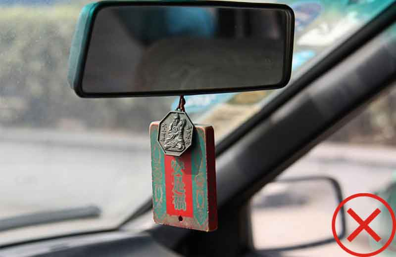
禁止车内悬挂与警察身份或执行公务无关的饰品
3、将车辆借给公安机关以外的单位和个人使用；
4、非警务工作所需将车辆停放在居民小区。
(五)规范使用警牌车辆上的警灯、警报器(警笛)。
1、警灯、警报器容易对居民生活造成一定程度的干扰，要坚持慎用原则。
2、驾驶员行车时应严格遵守交通规则。因执行紧急任务需要行使优先通行权时，必须使用警灯和警报器，并确保安全。
3、执行下列任务因情况紧急等情形有实际需要时，可视情使用警灯或同时使用警报器：
(1)赶赴刑事案件、治安案件、交通事故及突发案（事）件现场；
(2)追捕犯罪嫌疑人和在逃的罪犯、劳教人员、行政拘留人员；
(3)追缉交通肇事逃逸车辆和人员；
(4)押送犯罪嫌疑人、罪犯和劳教人员；
(5)执行警卫、警戒和治安、交通巡逻等任务。
4、下列情况不得使用警灯、警报器：
(1)非紧急警务工作事项；
(2)虽属紧急警务工作事项，但使用警灯、警报器不利公安机关行动的；
(3)警用车辆路过禁止鸣警报器的道路、区域或隧道的；
(4)两辆以上警用车辆列队行驶，前车已经使用警灯、警报器的，后车可使用警灯，但不得使用警报器。
(六)警用车辆事故处置。
1、警用车辆发生交通事故时，驾驶员必须立即停车，保护现场。若造成人员受伤的，驾驶员及随车人员应当立即妥善抢救受伤人员，并迅速报告当地交警部门、本单位领导、警用车辆管理部门，通知保险公司；
2、负责处理事故的交警部门必须及时向市局指挥中心、督察部门报告情况，萧山、余杭两区及五县（市）发生的警用车辆事故同时报告本级公安机关指挥中心、督察部门；
3、对警用车辆发生致人员重伤、死亡的交通事故，市局指挥中心应立即向有关市局领导报告，督察部门应立即派员赶赴现场协助处置。
(七)公安机关之间因工作需要借用警用车辆的，只能作应急之用，用后即还，借用单位对借用警用车辆安全使用负责，并严格遵守用车纪律及相关规定。
五、警用车辆维修、油料供应、年检
(一)警用车辆维修点应从政府采购部门定点的厂家中选择确定；因出差在外或特殊情况需在其他厂家修理的，应及时报告所属警用车辆管理部门批准。
(二)市局本级警用车辆油料供应由市局后勤处集中办理，二级会计单位由本单位的后勤部门集中办理，各公安分局、县（市）公安局由本单位的行政（后勤）部门集中办理。警用车辆加油卡实行一车一卡，并按车号加油。
(三)警牌车辆按规定年检，经市局后勤处与省厅车管所联系确定具体时间后，各单位按通知时间前往指定地点进行年检，年检时需携带车辆检验表格、行驶证、交强险单据。
(四)地方牌照车辆由各单位按车辆年检时间自行前往检测站进行年检，年检时需携带车辆行驶证、交强险单据。